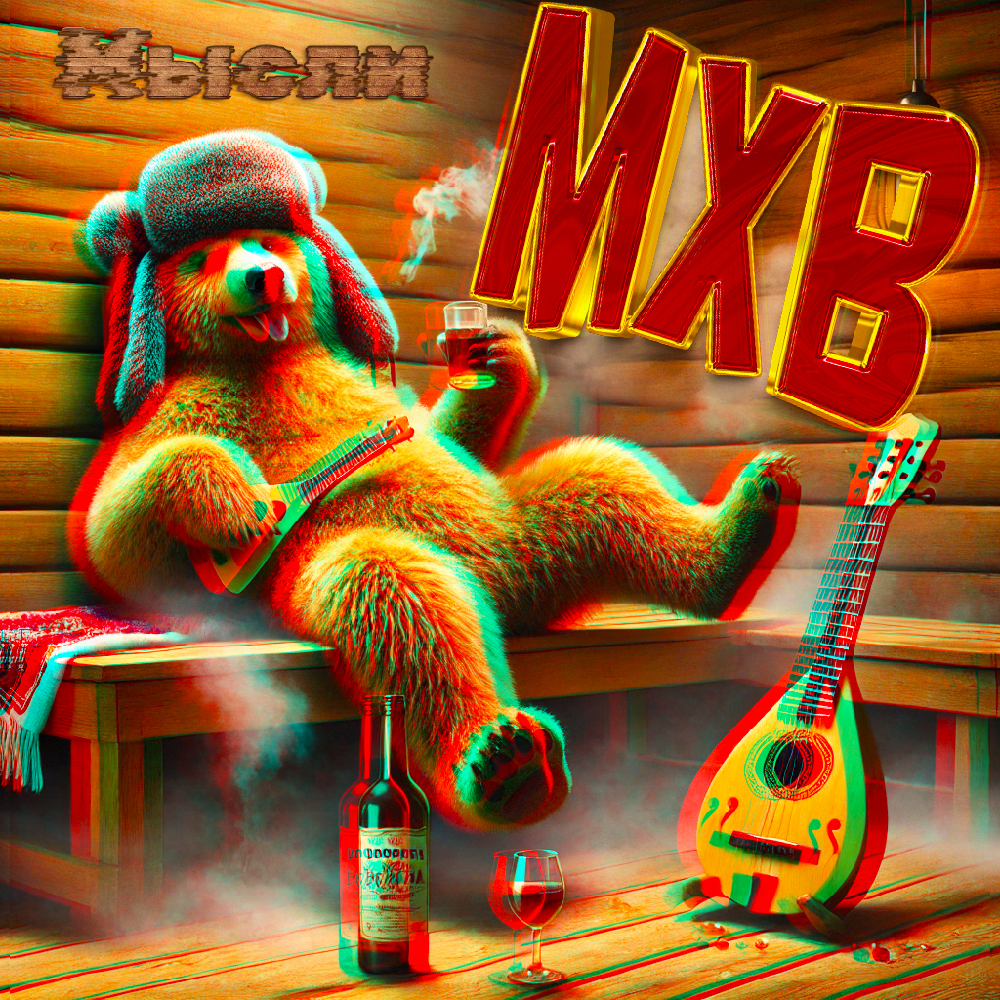

Привет! Меня зовут Артём. Если коротко — я увлекаюсь IT, люблю музыку и иногда творю что-то для души. Этот сайт — как раз один из моих маленьких экспериментов.
Сейчас интереса ради вернулся к вебу. это одно из хобби - вожусь с HTML, CSS, JavaScript, иной раз находит настроение разобраться в том, «как всё устроено». По работе же углубился в системное администрирование и автомтизацию.
В детстве я успел походить в музыкалку: фортепиано и хор. Потом были барабаны, гитара (десяток аккордов всё-таки освоил 😊). Сейчас живьём поиграть не получается, поэтому иногда придумываю тексты и делаю треки с помощью ИИ. Послушать мои "шедеверы" можно тут (картинка кликабельна):
Видео и всякого рода манипуляции с ним я люблю с юности: ещё в 2004-м мы с друзьями снимали мини-фильмы на кнопочные телефоны, перебрасывали материалы на компьютер и с помощью конвертации в подходящий для видеоредакторов того времени формат что-то клеили. Со временем это переросло в YouTube. В 2016 году я создал игровой канал (до этого и после были и другие каналы), и он вроде как более-менее зашёл кому-то. Пиаром я никогда не занимался, но каким-то образом там собралась аудитория примерно в две тысячи подписчиков. Это в основном ребята, которым близка моя игровая тематика. Со временем я стал появляться и на Twitch — можно заглянуть и туда. Правда, в данный момент времени на это уже, конечно, не так много.
В жизни я спокойный (Ну ладно, не всегда😃), с самоиронией и люблю простые вещи: велик, плавать, встречи с друзьями. А если подворачивается шанс — с удовольствием куда-нибудь сваливаю 🚴♂️🏊♂️✈️.
На этом пока всё, всем добра, счастья, здоровья. Держитесь там! 😉
P.S. Я, честно, не знал что толком писать, поэтому пусть будет так, как стало 🙃
Вернуться на главную